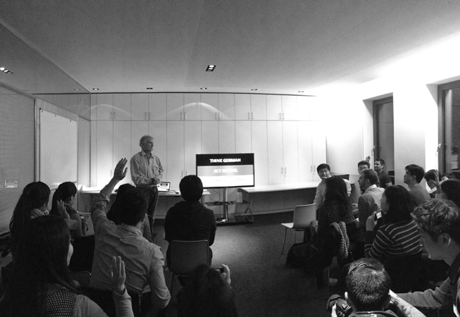
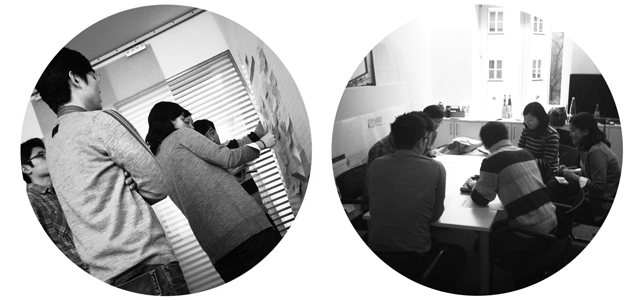

photo above: Samsung Design Workshop at frog Munich featuring Hartmut Esslinger, founder of frog design, as guest speaker.
objectives
to facilitate a 3 day workshop for Samsung's best creative talents to see, try, and learn new ways of working that they can bring back into the organization.
workshop overview frog setup a team of mentors that consist of designers, technologist, strategist and design researcher to facilitate the workshop with samsung's design team.
we took them through a series of exercises aimed at exposing each talents to some of the most emergent aspects of the design profession that we ourselves are still tinkering with.
this skill-related workshop is setup to focus on experience strategy and agile design methodology. experience strategy plays important role in choreographing people’s interactions with a brand’s products and services over extended periods of time. there are four activities in this session: touchpoint definition, ecosystem mapping, needs definition and service design.
for the agile design session, frog co-opted the agile manifesto, and articulated the specific tool, method, process, and ideological implications for how we work – better. activities for this session are about individuals and interactions, working products, customer collaboration and 'make & iteration' process.
role + responsibilities
facilitator + ux mentor
client
samsung ux centre | south korea

workshop deliverables
- design research, agile design and experience strategy presentation
- post workshop workbook incl. exercise sheets, etc.
- workshop activities documentation
. . . . .
#frogDesign, #germany, #design, #ux
. . . . .